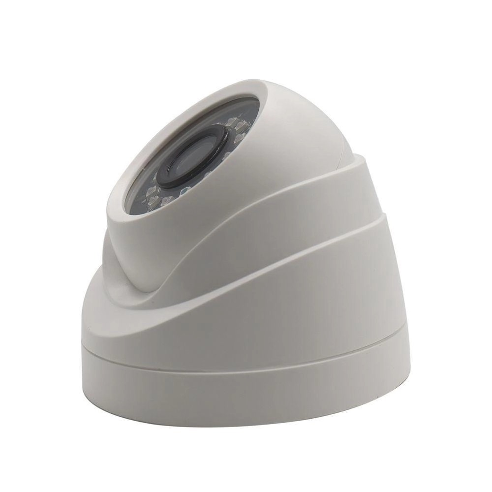
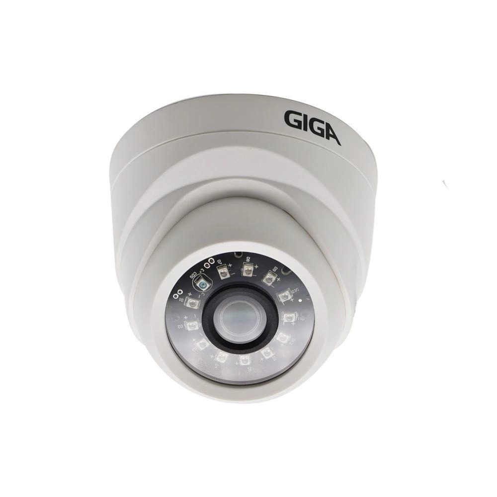

|
A melhor loja do Brasil. |
Câmera Dome Orion
 |

 |
R$100,00 |
Câmera Dome Orion 720p 2,6mm Gs0019 Giga Security
Câmera Dome Orion 720p 2,6mm GS0019 Giga Security
Qualidade de imagem
Detecção de seres humanos
Atualização através do dvr
Design Dome Plástica
Enxerga até 20 metros no escuro
Lente 2.6 mm
Instalação interna
Especificações:
Sensor de imagem: 1 megapixels cmos HD 1/4
Formato de vídeo: ntsc
Pixels efetivos: 1280(H) x 720(V)
Resolução: HD 720p
Relação sinal/ruído: > 58 dB (agc Desligado)
Obturador eletrônico: 1/50 (1/60) 1/10,000 seg.
Saída de vídeo: xvi/ahd, hdcvi, hdtvi, cvbs
Íris: Eletrônica
Lente: 2.6mm
Distância: 20m
Quantidade de LEDs: 12 LEDs smd
d-wdr: Sim
utc: Permite o controle e ajustes de todas as funções da câmera, desde a alteração do padrão de vídeo (xvi/ahd, cvi, tvi, cvbs) até ajustes finos de luminosidade, brilho e cores
agc / blc: Sim
Ilumin. Mín: cor: 0.1Lux@(F1.2, agc on), 0Lux com ir desligado
Grau de proteção: Não
Alimentação: 12V 10%
Consumo corrente máx.: 100mA(IR Off) ou 270mA(IR On)
Temperatura de operação: -10ºC 60ºC
Ângulo de Visão Horizontal: 91.6°
Dimensões:
Peso: 0,150 Kg
Largura: 9 cm
Altura: 8 cm
Profundidade: 9 cm